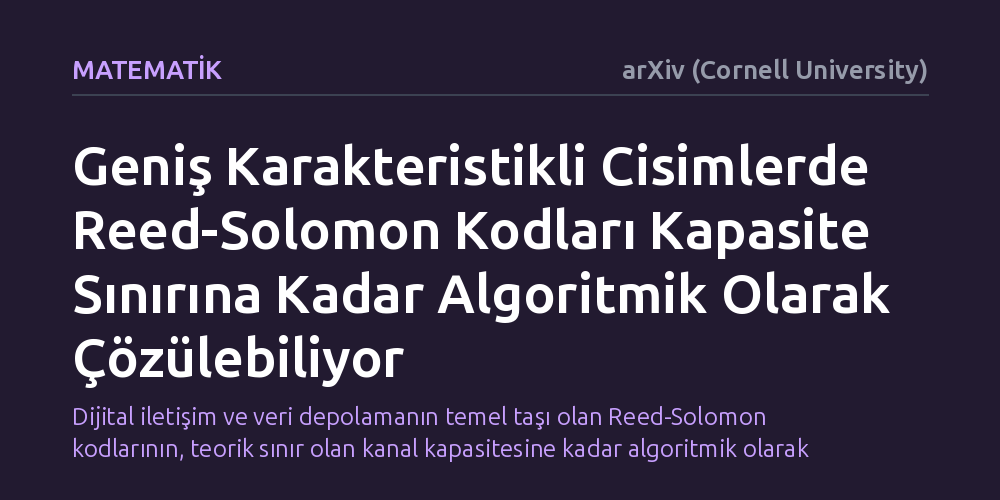

MATEMATIK · arXiv (Cornell University) · 2026-10-08
Çalışma, cebirsel kodlama kuramının temel açık problemlerinden olan Reed-Solomon kodlarının liste çözülebilirlik sınırlarını inceliyor. Geniş karakteristikli cisimlerde bu kodların kapasite sınırına kadar algoritmik olarak çözülebildiğini gösteren son matematiksel kanıtları bütüncül ve anlaşılır bir çerçevede sunuyor.
Dijital iletişim ve veri depolamanın temel taşı olan Reed-Solomon kodlarının, teorik sınır olan kanal kapasitesine kadar algoritmik olarak kurtarılabileceğini matematiksel olarak kesinleştiriyor.

Akıllı telefonlarımızdan uzay araçlarına, karekodlardan sabit disklere kadar dijital verinin saklandığı ve iletildiği her ortamda gürültü problemiyle karşılaşılır. Veri bir noktadan diğerine aktarılırken elektromanyetik parazitler veya depolama yüzeyindeki bozulmalar nedeniyle bit düzeyinde hatalar oluşabilir. 1960 yılında geliştirilen Reed-Solomon kodları, veriye belirli matematiksel kurallarla fazladan kontrol bilgisi ekleyerek alıcının bu bozulmaları tespit etmesini ve düzeltmesini sağlar. Ancak bir iletişim kanalından teorik olarak ne kadar gürültüye rağmen kayıpsız veri aktarılabileceğini belirleyen kesin bir tavan sınır bulunur; buna kanal kapasitesi denir.
Geleneksel hata düzeltme algoritmaları, gürültü miktarı belirli bir eşiği aştığında çalışmaz hale gelir. Araştırmacılar bu sınırı genişletmek amacıyla tek bir kesin sonuç aramak yerine, doğru mesajı da barındıran küçük bir olası mesajlar listesi üreten "liste çözümleme" yaklaşımını geliştirdiler. Yıllardır cebirsel kodlama kuramının en önemli açık sorularından biri, Reed-Solomon kodlarının bu yöntemle kanal kapasitesi sınırına kadar çözülüp çözülemeyeceğiydi.
Bu çalışma bir laboratuvar deneyi, yazılım simülasyonu ya da saha gözlemi içermiyor. Kanıtın kaynağı, soyut cebir ve kuramsal bilgisayar biliminin matematiksel ispat yöntemlerine dayanıyor. Yakın dönemde Brakensiek ve çalışma arkadaşları, geniş karakteristikli cisimler üzerindeki Reed-Solomon kodlarının kapasite sınırına kadar algoritmik biçimde çözülebildiğini matematiksel olarak gösterdi. Ardından Jeronimo, bu cebirsel teknikleri genişleterek kodların "yakınlık boşlukları" problemine uyguladı.
Elde edilen bu ilk matematiksel kanıtlar oldukça karmaşık ve farklı teknik katmanlara dağılmış durumdaydı. Harsha, Kumar ve Saptharishi tarafından hazırlanan bu çalışma, söz konusu ayrık yöntemleri tek bir çatı altında birleştiriyor. Yazarlar bu makalede önceki kanıtları sadeleştirip ortak bir cebirsel temele oturtarak "bu sonuçların bütüncül ve şeffaf bir anlatımını" sunuyor.
Çalışmanın ortaya koyduğu temel bulgu, Reed-Solomon kodlarının belirli cebirsel koşullar altında gerçekten de kapasite sınırına kadar liste yöntemiyle çözülebilir olduğunu teyit etmesidir. Buradaki temel teknik koşul, kodların tanımlandığı matematiksel cismin "geniş karakteristikli" olmasıdır. Matematiksel ispatlar, kanal kapasitesine ne kadar yaklaşılırsa yaklaşılsın, iletilen orijinal mesajın polinom katsayılarının sonlu ve yönetilebilir büyüklükteki bir aday listesi içinde kesin olarak bulunabileceğini gösteriyor.
Ayrıca derlenen yöntemler, kod bloklarının doğru mesaja ne kadar yakın olduğunu belirleyen yakınlık boşluğu probleminin de çözüldüğünü ortaya koyuyor. Bir veri dizisi bir Reed-Solomon koduna belirli bir mesafeden daha yakınsa, bu yakınlığın rastlantısal olamayacağı ve algoritmik olarak yakalanabilir yapısal bir düzen taşıdığı açık bir dille doğrulanıyor.
Bu sonucun anlaşılır biçimde yapılandırılması, yarım yüzyıldan uzun süredir kullanılan bir kodlama ailesinin sınırlarının kesin olarak haritalandırıldığı anlamına gelir. Mühendisler ve kuramcılar artık Reed-Solomon kodlarının teorik sınır olan kanal kapasitesine matematiksel olarak erişebildiğini net bir biçimde bilmektedir. Bu bilgi, yeni hata düzeltme protokolleri tasarlanırken kuramsal açıdan boşlukta kalan varsayımlara değil, kesin matematiksel sınırlara dayanılmasını sağlar.
Bununla birlikte, sonucun doğrudan tüketici cihazlarında ani bir hız artışı yaratacağını düşünmek doğru olmaz. Algoritmik çözülebilirlik matematiksel bir varoluş kanıtıdır; pratikte kullanılan donanım yongalarında bu algoritmaların enerji ve süre açısından ne kadar verimli çalışacağı ayrı bir mühendislik optimizasyonu konusudur. Yine de kuramsal engelin aşılmış olması, gelecekteki pratik protokol tasarımları için sağlam bir teorik zemin sunmaktadır.